I
Apprendre un pouvoir
Gagne des points de compétence
Chaque niveau rapporte 25 points. Voir le guide de progression.
Trouve un Maître de la Force
Appuie sur E devant le PNJ. Le Maître de la Force Jedi n'enseigne qu'aux Jedi, le Maître Sith qu'aux Sith. Le rang précédent d'un pouvoir est toujours requis.
Équipe-le
Le pouvoir acheté va dans ton inventaire. Équipe-le au terminal d'entraînement ou avec le menu T, sabre en main.
35universels
8côté lumineux
5côté obscur
8techniques d'holocron
Les holocrons renferment des techniques rares ou interdites qu'aucun Maître n'enseigne. Un holocron Jedi ne s'ouvre qu'à un Jedi, un holocron Sith qu'à un Sith. Les citoyens neutres ne peuvent apprendre aucun pouvoir.
II
Catalogue des pouvoirs
56 pouvoirs
| Pouvoir | Camp | Catégorie | Effet | Où l'apprendre | Points | |
|---|---|---|---|---|---|---|
| Poussée de Force | Universel | Télékinésie | Repousse violemment une cible avec la Force. | Maître de la Force | 25 | |
| Poussée supérieureRequiert : Poussée de Force | Universel | Télékinésie | Une poussée bien plus puissante. | Maître de la Force | 50 | |
| RépulsionRequiert : Poussée supérieure | Universel | Télékinésie | Repousse tout ce qui t'entoure dans un rayon autour de toi. | Maître de la Force | 100 | |
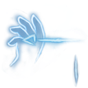 | Traction de Force | Universel | Télékinésie | Attire une cible vers toi. | Maître de la Force | 25 |
| Traction supérieureRequiert : Traction de Force | Universel | Télékinésie | Une traction bien plus puissante. | Maître de la Force | 50 | |
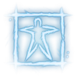 | SaisieRequiert : Traction de Force | Universel | Télékinésie | Saisis ta cible avec la Force et maintiens-la. | Maître de la Force | 50 |
| TourbillonRequiert : Saisie | Universel | Télékinésie | Soulève ta cible dans les airs. | Maître de la Force | 100 | |
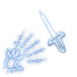 | Lancer de sabre | Universel | Télékinésie | Lance ton sabre laser, qui revient dans ta main. | Maître de la Force | 25 |
| Projection de rocherRequiert : Poussée de Force | Universel | Télékinésie | Arrache un rocher et projette-le sur ton adversaire. | Maître de la Force | 50 | |
| Assaut télékinétiqueRequiert : Projection de rocher | Universel | Télékinésie | Projette un bloc de terre massif. | Maître de la Force | 100 | |
| Onde de ForceRequiert : Poussée supérieure | Universel | Télékinésie | Une onde qui repousse et blesse les adversaires. | Maître de la Force | 100 | |
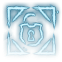 | Brèche | Universel | Télékinésie | Force l'ouverture des portes qui te barrent la route. | Maître de la Force | 25 |
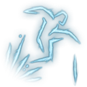 | Saut de Force | Universel | Corps | Saut assisté par la Force. | Maître de la Force | 25 |
| Vitesse de Force | Universel | Corps | Accélère tes mouvements grâce à la Force. | Maître de la Force | 25 | |
| Vitesse de Force IIRequiert : Vitesse de Force | Universel | Corps | Une vitesse encore plus grande. | Maître de la Force | 50 | |
| Vitesse de Force IIIRequiert : Vitesse de Force II | Universel | Corps | La vitesse d'un maître. | Maître de la Force | 100 | |
| Force accrue | Universel | Corps | Renforce tes coups grâce à la Force. | Maître de la Force | 50 | |
| Force accrue (maître)Requiert : Force accrue | Universel | Corps | Des coups renforcés au niveau d'un maître. | Maître de la Force | 100 | |
| Soin | Universel | Soin | Soigne tes blessures avec la Force. | Maître de la Force | 25 | |
| Soin IIRequiert : Soin | Universel | Soin | Un soin plus efficace. | Maître de la Force | 50 | |
| Soin IIIRequiert : Soin II | Universel | Soin | Un soin de maître. | Maître de la Force | 100 | |
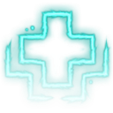 | Soin rapideRequiert : Soin II | Universel | Soin | Soigne tes blessures à une vitesse étonnante. | Maître de la Force | 100 |
| Méditation | Universel | Esprit | Récupère ta Force en méditant. | Maître de la Force | 25 | |
| Méditation avancéeRequiert : Méditation | Universel | Esprit | Une méditation plus profonde et plus rapide. | Maître de la Force | 50 | |
| Perception | Universel | Esprit | Vision augmentée : perçois les êtres vivants à travers les murs. | Maître de la Force | 25 | |
| Perception avancéeRequiert : Perception | Universel | Esprit | Une perception plus large. | Maître de la Force | 50 | |
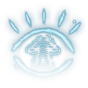 | Perception maîtriséeRequiert : Perception avancée | Universel | Esprit | La perception d'un maître. | Maître de la Force | 100 |
| Aveuglement | Universel | Esprit | Pénètre l'esprit de ton adversaire et aveugle-le un court instant. | Maître de la Force | 50 | |
| SommeilRequiert : Aveuglement | Universel | Esprit | Plonge ta cible dans le sommeil. | Maître de la Force | 100 | |
| Immunité | Universel | Protection | Absorbe les pouvoirs de Force adverses et récupère de la Force. | Maître de la Force | 50 | |
| Immunité avancéeRequiert : Immunité | Universel | Protection | Une absorption plus efficace. | Maître de la Force | 100 | |
| Barrière | Universel | Protection | Protège-toi des dégâts entrants. | Maître de la Force | 50 | |
| Camouflage | Universel | Protection | Enveloppe-toi dans la Force pour disparaître. | Maître de la Force | 50 | |
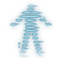 | Camouflage IIRequiert : Camouflage | Universel | Protection | Un camouflage plus long. | Maître de la Force | 100 |
| Camouflage IIIRequiert : Camouflage II | Universel | Protection | Un camouflage de maître. | Maître de la Force | 150 | |
| Soin d'autrui | Jedi | Côté lumineux | Soigne le joueur que tu vises. | Maître de la Force | 50 | |
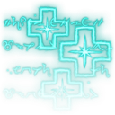 | Soin de groupeRequiert : Soin d'autrui | Jedi | Côté lumineux | Referme les blessures de tes alliés proches. | Maître de la Force | 100 |
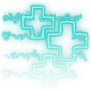 | Soin de masseRequiert : Soin de groupe | Jedi | Côté lumineux | Soigne tout un groupe grâce à la Force. | Maître de la Force | 150 |
| Soin supérieurRequiert : Soin III | Jedi | Côté lumineux | Soigne tes blessures en quelques secondes. | Maître de la Force | 100 | |
| Mur de Force | Jedi | Côté lumineux | Dresse un mur protecteur de Force. | Maître de la Force | 50 | |
| Dôme de ForceRequiert : Mur de Force | Jedi | Côté lumineux | Crée un dôme qui te protège, toi et tes alliés. | Maître de la Force | 100 | |
| Renvoi | Jedi | Côté lumineux | Renforce ta volonté et renvoie une partie des dégâts à l'attaquant. | Maître de la Force | 100 | |
| Extinction | Jedi | Côté lumineux | Éteint une cible en feu grâce à la Force. | Maître de la Force | 25 | |
| Étranglement de Force | Sith | Côté obscur | Étrangle ta cible avec la Force. | Maître de la Force | 50 | |
| Étranglement expertRequiert : Étranglement de Force | Sith | Côté obscur | Étrangle ta cible bien plus rapidement. | Maître de la Force | 100 | |
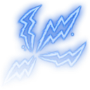 | Éclair de Force | Sith | Côté obscur | Déchaîne des éclairs du bout de tes doigts. | Maître de la Force | 100 |
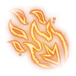 | Embrasement | Sith | Côté obscur | Enflamme une cible grâce à la Force. | Maître de la Force | 50 |
| Souffrance régénératrice | Sith | Côté obscur | Sacrifie ta santé pour regagner de la Force. | Maître de la Force | 50 | |
| Méditation de combat | Jedi | Holocron Jedi | Technique rare : en méditant, restaure la Force et la garde des alliés proches. | Holocron Jedi | 150 | |
| Résurrection | Jedi | Holocron Jedi | Pouvoir très rare : ramène un allié tombé en visant son corps. | Holocron Jedi | 200 | |
| Guérison totale | Jedi | Holocron Jedi | Restaure entièrement ta santé grâce à la Force. | Holocron Jedi | 150 | |
| Immunité maîtriséeRequiert : Immunité avancée | Jedi | Holocron Jedi | Immunité permanente aux pouvoirs adverses tant qu'il te reste de la Force. | Holocron Jedi | 150 | |
| Drain d'essence vitale | Sith | Holocron Sith | Technique interdite : draine la vie de ta cible pour restaurer la tienne. | Holocron Sith | 150 | |
| Siphon de vieRequiert : Drain d'essence vitale | Sith | Holocron Sith | Draine la vie de ta cible en continu. | Holocron Sith | 200 | |
| Téléportation | Sith | Holocron Sith | Magie ancienne : transporte-toi à l'endroit visé. | Holocron Sith | 150 | |
| Pas de l'ombreRequiert : Vitesse de Force III | Sith | Holocron Sith | Déplace-toi tel une ombre, invisible aux yeux de tous. | Holocron Sith | 150 |